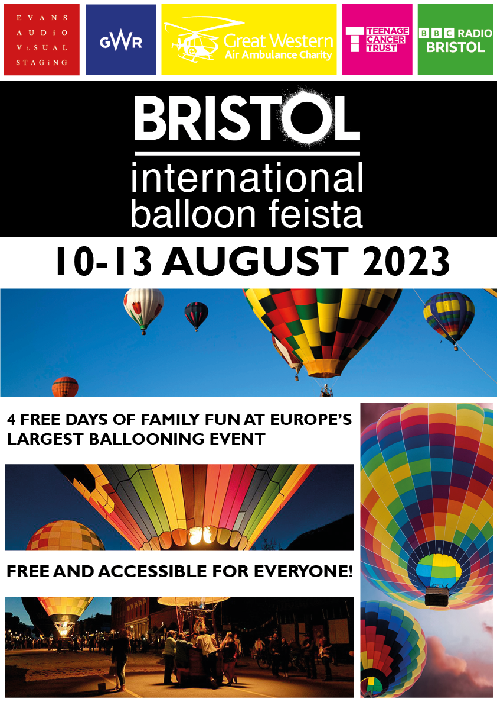
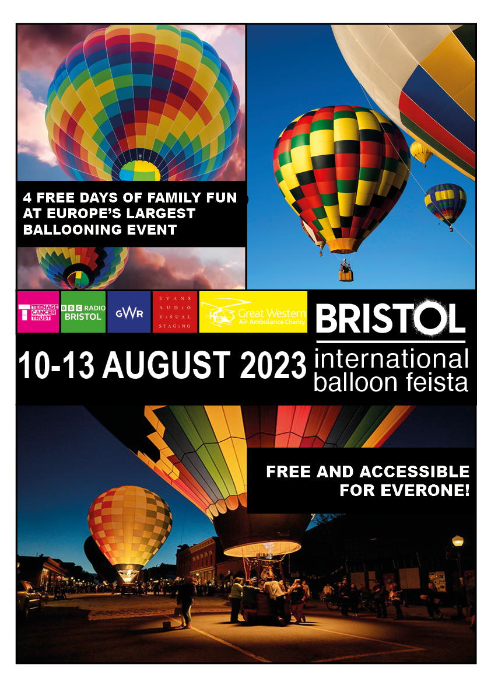

Here are my "Contrast, Repeitiion, Alignment, and Proximity" deliverables!

When getting started designing this 1st poster, one of the first things I wanted to and found easy to do was add contrast by adding black text against a white background. I went on the actual Balloon Feista website, and by inspecting elements, I found that the “International Balloon Feista” text was Arial. This allowed me to use repetition and use that font-family for almost all of the editable text provided to me. On the topic of alignment, the top half of the poster was mostly centred, but the text on the bottom half was aligned on the left. I used the images provided to serve as some sort of white space for the text, to separate descriptions of the event with visual depictions of it.

With this poster, I found it was consistent with the way I designed the first one, except all text was white contrasted with a black background, and I found the poster more akin to the style of a graphic novel, with how I wanted to add black borders on each image, and surrounding the poster was a white background. This was when I started to be experimental with alignment and proximity. Nothing was centred, everything was either aligned left or right. I made the “4 free days” sentence be positioned as the first thing viewers will read, assuming they follow a Z-Pattern, and “Free and accessible” as the last thing they read. Like the 2 other posters, I wanted the date to be in close proximity to the main logo, so I decided to position it to the left of the main logo, underneath the sponsor logos.
Designing this 3rd poster was when I found myself my confident with using InDesign. From this, I wanted to make something different than the other 2 posters and saw the image with the vast blue sky and removed black box from the “Bristol International Balloon Feista” logo and contrasted its white text against it. I also did the same for the sponsor logos and they also had the same effect. They’re arranged and aligned similarly to my first poster, but in my opinion it looks a lot better. I still wanted to use all the images provided to me in some way, so I thought to use them as boxes for the other text. I wanted to consistently use white text instead of black, which was an issue I ran into as one of the images mostly consisted of bright colours. This was when I played with the opacity of both images, and eventually found a balance where I could see the white text without loosing the 2 images completely. I was careful about the proximity between each text and image, making sure that the blue sky served as suitable white space for the poster.